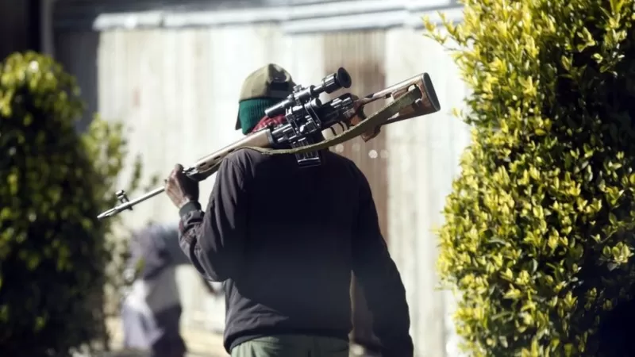
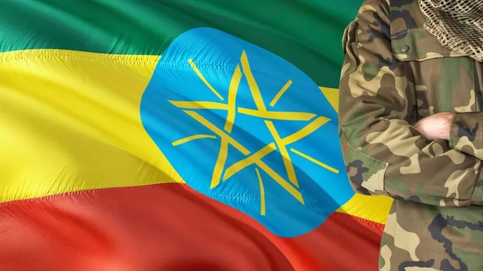

ፋኖ ማን ነው? በማንስ ይደገፋል?
28 ሚያዚያ 2022

ጠቅላይ ሚኒስትር ዐብይ ወደ ሥልጣን ከመምጣታቸው በፊት ፋኖ ስሙ ይነሳ የነበረው በህቡዕ ትግል ነበር።
በወቅቱ በተለያዩ የአገሪቱ አካባቢዎች የነበሩ ሕዝባዊ ተቃውሞዎችን ተከትሎ ፋኖም በአማራ በተለይ ደግሞ በጎንደር አካባቢ የወጣቶች የህቡዕ አደረጃጀት እንደነበር ይነገራል። ከዚያ በኋላ ግን በአገሪቱ የተከሰቱ አለመረጋጋቶችን ተከትሎ ስሙ በተደጋጋሚ የሚነሳው 'የታጣቂዎች ኢመደበኛ አደረጃጀት' በሚል ሆኗል። ፋኖ የፌደራል መንግሥቱ ከትግራይ ኃይሎች ጋር ባደረገው ትግል በተለይ ደግሞ የህወሓት ኃይሎች በአማራ ክልል የተወሰኑ ስፍራዎችን ተቆጣጥረው በነበረበት ወቅት ከመንግሥት የፀጥታ ኃይሎች ጎን በመሆን በቀጥታ ተሳትፏል። ምንም እንኳን ፋኖ የሚለው ስያሜ አሁን ካለው ታጣቂ ኃይል ጋር ተያይዞ በብዙዎች ዘንድ ቢታወቅም የፋኖ ፅንሰ ሃሳብ ዘመናትን ያስቆጠረ እንደሆነ የታሪክ መዛግብት ያስቃኛሉ። ስለ ፋኖ ትንታኔ የሚሰጡ ሰዎች ትርጓሜው በበደል ተገፍቶ ዱርን የመረጠ፣ መጨቆንን ጠልቶ ጠመንጃ የጨበጠ ሰው 'ፋኖ' የሚል መጠሪያ እንደሚሰጠው ይናገራሉ። እንደ እነዚህ ሰዎች አባባል ፋኖ መገፋት የወለደው የለውጥ ኃይል ሲሆን ለዘመናትም ይህንን የሚያንጸባርቁ ፉከራዎች፣ ግጥሞችና ዘፈኖች ከትውልድ ወደ ትውልድ ሲቀባበሉ እዚህ ደርሰዋል።
- link1
- link2
- link3
ፋኖ የሚለው ስያሜ 'ለበርካታ ሺህ ዓመታት የአማራ ህዘብ ማስተሳሰሪያ ክሩ ሆኖ፣ ለችግር ጊዜ መፍትሄ ማፍለቅያ እሴቱ ሆኖ የመጣ እንደሆነም ሲናገሩ ይደመጣል። ከጥንት ጀምሮ ብዙ ሲባልለት የቆየው የፋኖ እሳቤ አሁን ያለውን ቡድን ይገልጸው ይሆን? ቡድኑ በተለያዩ ወገኖች ዘንድ የተለያዬ ስያሜ ተሰጥቶታል። ቡድኑ በአማራ ክልል መንግሥት የህዝብ ደጀን ተደርጎ ሲቀርብ፣ በኦሮሚያ ክልላዊ መንግሥት ደግሞ 'አንዳንድ የአማራ ጽንፈኛ ታጣቂዎች' በሚል ይወገዛል። የሰብዓዊ መብት ተሟጋቾች ደግሞ ቡድኑን በርካታ የሰብዓዊ መብት ጥሰቶችን በመፈፀም ይወነጅሉታል።
በአማራ ክልል የሚንቀሳቀሰው ፋኖ አደረጃጀቱ ምን ይመስላል?
የፋኖ አደረጃጀት በአማራ ክልል በተለያዩ ስፍራዎች ይገኛል። በሸዋ፣ በወሎ፣ በጎንደር እና በጎጃም የራሱ አመራር ያለው ፋኖ የተደራጀበት ጊዜ እና ባህርያትም እንዲሁ የተለያዩ ናቸው። በጎጃም የሚንቀሳቀው ፋኖ የአማራ ሕዝባዊ ኃይል ፋኖ እንደሚባልም ሰብሳቢው አቶ ዘመነ ካሴ ይናገራሉ። ፋኖ በአማራ ክልል በአራት የተለያዩ ሥፍራዎች ሲደራጅ እርሳቸው ላለፉት ስምንት ወራት በጎጃም የሚንቀሳቀሰውን ፋኖ በማደራጀት እና በመምራት ላይ ይገኛሉ። የትግራይ ታጣቂዎች በአማራ ክልል ውጊያ በከፈቱበት ወቅትም በአቀስታ በኩል ተሰልፈው መዋጋታቸውንም ለቢቢሲ ተናግረዋል። ራሳቸውን የአማራ ህዝባዊ ኃይል በሚል ለምን ማደራጀት እንደፈለጉ ሲጠየቁም "ሕዝባዊ ጦርነት ታውጆብናል፤ ሕዝባዊ ጦርነት ማድረግ አለብን። ሕዝባዊ ዘመቻ ተካሄዶብናል፤ ሕዝባዊ ምላሽ መስጠት አለብን'" በማለት ያስረዳሉ። ከጎጃም ወደ ወሎና ሸዋ ስንመጣ ደግሞ የነዚህ ኃይሎች ጥምረት የምስራቅ አማራ ፋኖ በሚል አደረጃጀት ስር መሰባሰባቸውን የቡድኑ ትምህርት ሥልጠናና ሕዝብ ግንኙነት ኃላፊ የሆኑት አቶ አበበ ፈንታው ለቢቢሲ ተናግረዋል። ስለ ፋኖ አመሰራረትም ሲያስረዱ በ2008 በአገር አቀፍ ደረጃ የነበረውን ሕዝባዊ እምቢተኝነት ተከትሎ በራያ ፋኖ በህቡዕ ተደራጅተው መንቀሳቀስ መጀመሩን ነው። በትግራይ ተነስቶ ወደ አማራና አፋር ክልሎች የተዛመተውን ጦርነት በተለይም የትግራይ ኃይሎች በነሓሴ ወር ወደ አማራ ክልል ማቅናታቸውን ተከትሎ ደሴ ላይ የወሎ ፋኖን ማቋቋማቸውን ያስረዳሉ። እስከ 2011 ዓ.ም. ድረስ በይፋ መሳርያ ታጥቀው ይንቀሳቀሱ እንዳልነበርም አቶ አበበ ገልፀዋል። ሥልጠናም ቢሆን በ2014 ዓ.ም. የትግራይ ኃይሎች ጋር ከነበረው ውጊያ ጋር ተያይዞ የክልሉ መንግሥት እና የፌደራል መንግሥት ጥሪ ተከትሎ የተጀመረ እንጂ ቀድሞ እንዳልነበር ያስታውሳሉ። የትግራይ ኃይሎች ወደ አማራ ክልል መግባታቸውን ተከትሎ በደቡብ እና በሰሜን ወሎ በርካታ ግንባሮች ከመከላከያ እና ከልዩ ኃይሉ ጎን በመሆን መዋጋታቸውን አቶ አበበ ይናገራሉ። አቶ ዘመነ ከስምንት ወር በፊት፣ ነሐሴ 2013 ዓ.ም. ፋኖን ማደራጀት የፈለጉበትን ምከንያት ሲያስረዱ የትግራይ ኃይሎች ወደ አማራ ክልል መገስገስ በመጀመራቸው መሆኑን በቀዳሚነት ያነሳሉ። ነገር ግን 'በሌሎች አካባቢዎች የአማራን ሕዝብ በጠላትነት የፈረጁ ቡድኖች እና ኃይሎች ራሳቸውን ማፈርጠም እና ማደራጀት ሲጀምሩ' የአማራን ሕዘብን ለመታደግ መደራጀት እና መሰልጠን ያስፈልግ እንደነበር ያስታውሳሉ። ይህ የአጭር ጊዜ ግብ ነው የሚሉት አቶ ዘመነ ከረዥም ጊዜ ግብ አንጻር ደግሞ ላለፉት አስርት ዓመታት 'የኢትዮጵያ ፖለቲካ ማጠንጠኛ አማራ ጠልነት ነው' ይላሉ። ይህ ለረዥም ዓመታት በኢትዮጵያ ፖለቲካ ውስጥ ስር የሰደደ አስተሳሰብ በአንድ እና በሁለት ዓመት ትግል ብቻ ይገታል ብለው እንደማያምኑ የሚናገሩት አቶ ዘመነ፤ "በኢትዮጵያ ሰማይ ስር ሁሉም ሕዝቦች እንደ ዜጋ በነጻነት፣ በእኩልነት፣ በመከባበር፣ በፍትህ የሚኖሩበት ዘመን እስኪመጣ. . .የአማራ ህዘብ እንደ ሌሎች ወንድሞቹ አንገቱን ቀና አድርጎ በእኩልነት መኖር እስኪችል ድረስ' ሕዝብን ማደራጀት፣ ማንቃት፣ ማሰልጠን አስፈላጊም ሲሆን ማስታጠቅ የሚችል አደረጃጀት ያስፈልጋል ብለው በማመናቸው የአማራ ህዝባዊ ኃይል በሚል መሰባሰባቸውን ያስረዳሉ። የአማራ ህዝባዊ ኃይል በመላው አማራ የሚንቀሳቀስ መሆኑን የሚናገሩት አቶ ዘመነ ይኹንና ጠንከር ያለ አደረጃጃት ያለው በጎጃም መሆኑን ለቢቢሲ አረጋግጠዋል። የፋኖ አመራሮች የአማራን ህዝብ የወደፊት እጣ ፈንታ ብቻ ሳይሆን የአገሪቱም መፃኢ እድል በትከሻቸው ላይ እንደሆነ ያምናሉ። የአማራን ህዝብ ብቻ ሳይሆን አገሪቱ ከገባችበት ውጥንቅጥ ለማውጣትም እየታገሉ እንደሆነ የህዝባዊ ኃይሉ አመራሮች በልበ ሙሉነት የሚናገሩት ነው። "ይህ ትውልድ አዲስ ቀመር ይፈልጋል። ያ አዲስ ቀመር ተምጦ መወለድ ካለበት አዲሱ 'ሜተዶሎጂ' አስተሳሰብን መሰረት ያደረገ፣ አላማን መሰረት ያደረገ፣ የአማራን ሕዝብ መሰረት ያደረገ፣ . . .ኢትዮጵያንም ከመፍረስ መታደግ ላይ መሰረት ያደረገ አስተሳሰብ ላይ የቆመ ትግል" ነው ይላሉ አቶ ዘመነ አቶ ዘመነ ትግላቸው አዲስ ቀመርና የኢትዮጵያን አንድነት መጠበቅ አስተሳሳብ ላይ ያተኮረ ከሆነ ነፍጥ አንስቶ እየታገሉ ይህንን አስተሳሰብ ማስፈፀም አይቃረንም።ለዚህ ትግል የፖለቲካ ፓርቲ መስርቶ መንቀሳቀስ አይሻልም ተብለው በቢቢሲ የተጠየቁ ሲሆን እርሳቸው እና አማራን ህዝባዊ ኃይል ፋኖን የሚመሩ አመራሮች የኢትዮጵያ የፖለቲካ ችግር አሁን ባለው ነባራዊ ሁኔታ ከፓርቲ ፖለቲካ የዘለለ ነው ብለው እንደሚያምኑ ይናገራሉ። "በተለይ ለአማራ ህዘብ ጥያቄዎች የፖለቲካ ፓርቲ በዚህ ወቅት ያን ያክል አመርቂ ውጤት ያመጣል ብለን አናምንም" ሲሉ ያስረዳሉ። አቶ ዘመነ የሚያነሷቸው ጥያቄዎች ሌሎች የፖለቲካ ኃይሎች ታግለው ከተፈቱ የእነርሱ መሳሪያ አላስፈላጊ እንደሆነና እስከዚያው ግን በትጥቅ መታገላቸውን እንደሚቀጥሉ ይናገራሉ። "የመሳሪያን አፈሙዝ የሚደፍነው ፍትህ ነው፣ የመሳሪያን አፈሙዝ የሚደፍነው በእኩልነት በአንድነት በፍቅር እንደ ዜጋ ተቻችሎ መኖር ነው። አንዱ አንበርካኪ ሌላው ተንበርካኪ ሆኖ በሚኖርነት ዓለም ውስጥ መሳሪያ አፈሙዝ ሁሌም ክፍት ነው። ሁሌም ምላጭ ይሳባል። " በማለት የትጥቅ ትግልን አስፈላጊነት ያብራራሉ።
በተለያዩ አካባቢዎች ስሙ የሚነሳው 'ፋኖ'
ፋኖ በተደጋጋሚ በአራቱ የወለጋ ዞኖች እና ምዕራብ ሸዋ ዞን ንፁኀንን በመግደል፣ ቤት ንብረትን በማቃጠል ውንጀላ ይቀርብታል። በቅርቡ ደግሞ ሰሜን ሸዋ አካባቢ ላጋጠመው ክስተት በኦሮሚያ ክልል መንግሥት እና ነዋሪዎች ውንጀላ ቀርቦበታል። ባለፈው ወር የአማራ ክልል ሰሜን ሸዋ ዞን እና የኦሮሚያ ክልል ምሥራቅ ሸዋ ዞኖች በሚዋሰኑበት አካባቢ ጥቃት ተፈጽሞ የፌደራል ፖሊስ አባላት፣ የአካባቢ ሚሊሻዎችና በነዋሪዎች ላይ ሞትና ጉዳት ደርሷል። ቢቢሲ በኦሮሚያ ውስጥ በመንቀሳቀስ ጥቃት ያደርሳሉ በሚል ስለሚወነጀሉት 'ፋኖዎች' ምላሽ የሚሰጥ አካል አላገኘም። ባለፈው ሳምንት ደግሞ በአማራ ክልል ሰሜን ሸዋ ዞን ኤፍራታና ግድም ወረዳ ለተከሰተው ግጭት ተጠያቂ ሆነው ከቀረቡት ኃይሎች መካከል አንዱ ፋኖ ነው። ለዚህ ጥፋት የአካባቢው የአማራ ክልል አመራሮች 'ሸኔ'ን ተጠያቂ ሲያደርጉ የኦሮሚያ ክልል አመራሮች ደግሞ ተጠያቂዎቹ የፋኖ ታጣቂዎች ናቸው ይላሉ። በፋኖዎች ላይ የሚቀርበው ውንጀላ ከኦሮሚያ ክልል አልፎ በቤንሻንጉል መተከል ዞንም ይሰማል። በቅርቡም ዓለም አቀፍ የመብት ተሟጋቾቹ አምነስቲ ኢንተርናሽናል እና ሂዩማን ራይትስ ዎች በምዕራብ ትግራይ፣ የትግራይ ተወላጆች ላይ በሰብዓዊነት ላይ የሚፈጸሙ ወንጀሎች ተፈጽመዋል በሚል ባወጡት ሪፖርት ላይ የፋኖ ታጣቂዎች ስማቸው ተነስቷል። በዚህ ሪፖርት ላይ የሰብዓዊ መብት ተሟጋቾቹ መንግሥት ኢ-መደበኛ አደረጃጀቶችን ያፍርስ ሲሉ ጠይቀዋል።
የፋኖ ታጣቂዎች ከክልሉ ውጪ የተለያዩ ጥቃቶች በመፈፀም ስማቸው እንደሚነሳ የተጠየቁት የአማራ ህዝባዊ ኃይል ሰብሳቢ የሆኑት አቶ ዘመነ 'እኛ የምናውቃቸው የሉም፤ ይኖራሉ ብለን አናምንምም' ሲሉ ምላሻቸውን ሰጥተዋል። የአማራ ህዘብ በተለያዩ የአገሪቱ ክፍሎች እንደሚኖር አንስተው አማራ በየደረሰበት ተከባብሮ፣ ተቻችሎ የሚኖር እንጂ ራሱን በፋኖነት አደራጅቶ፣ በታጣቂነት ራሱን አደራጅቶ. . .አብሮት ከኖረው ማህበረሰብ ጋር የሚናቆር ወይንም አብሮት የሚኖረውን ማህበረሰብ መሳሪያ አንስቶ የሚታገል፣ የሚረብሽ ማህበረሰብ አይደለም እሴቱም አይደለም ሲሉ ይሞግታሉ። አቶ አበበ በበኩላቸው ከወለጋ፣ ከመተከል እንዲሁም ከተለያዩ የደቡብ ክልል አካባቢዎች እነርሱ ጋር በመምጣት ስልጠና የወሰዱ የአማራ ተወላጆች መኖራቸውን ይናገራሉ። አቶ ዘመነ ግን ከክልሉ ውጪ መጥተው እነርሱ ጋር ስልጠና የወሰዱ የአማራ ብሔር ተወላጆች እንደሌሉ ያስረዳሉ። አቶ ዘመነ አክለውም በክልሉ ከሚንቀሳቀሱት ከጎንደር፣ ከሸዋ እና ወሎ የፋኖ አመራሮች ጋር እንደሚገናኙ ፣ እንደሚነጋገሩ እና እንደሚመካከሩ ያስረዳሉ። አቶ አበበም ቢሆኑ በተለያዩ የክልሉ ስፍራዎች የሚገኙ የአማራ አደረጃጀቶች በተለያየ ጊዜ እየተገናኙ እንደሚመካከሩ ገልፀዋል። አቶ ዘመነም ሆኑ አቶ አበበ በቅርቡ አንድ መዋቅር በመፍጠር በአንድ ጥላ ስር የመሰባሰብ ፍላጎት መኖሩን ለዚህም በጋራ እየሰሩ መሆኑን ይናገራሉ። በዚህም ይላሉ አቶ ዘመነ "ከአንድ እዝ ሰንሰለት የሚታዘዝ ፋኖ እንፈጥራለን ብለን ነው የምናስበው" ይላሉ። ይህ በአንድ እዝ ስር የሚታዘዝ ፋኖ ግን መቼ ይፋ እንደሚሆን አቶ አበበም ሆኑ አቶ ዘመነ ቁርጥ ያለ ቀን አላስቀመጡም።
'ስልጠናና ምልመላዎች ቀጥለዋል'
የትግራይ ኃይሎች ከአማራ ክልል ከወጡም በኋላ በክልሉ አሁንም እንደ አዲስ ለፋኖ አባልነት የሚመለመሉ እና የሚሰለጥኑ መኖራቸው ይናገራል። ለዚህ ምክንያቱ ምንድን ነው? ተብለው የተጠየቁት የፋኖ አመራሮች አሁንም የትግራይ ኃይሎች ከአማራ ክልል ሙሉ በሙሉ አለመውጣታቸውን ይናገራሉ። ለዚህም ማስረጃ ሲያቀርቡ ከፊል ራያ እና ከፊል ዋግ በህወሓት ኃይሎች ቁጥጥር ስር መሆናቸውን አቶ አበበም ሆኑ አቶ ዘመነ ይናገራሉ። አቶ ዘመነ "የትግራይ ኃይሎች በወልቃይት እና ሁመራ ምሽግ እየቆፈሩ ጦር እያደራጁ ነው" በማለት "የወረራ ስጋት መኖሩንም" ያነሳሉ። አቶ አበበ በበኩላቸው "የምንዘጋጀው ለታሪካዊ የኢትዮጵያ ጠላቶችም ጭምር ነው፤ በአቅማችን አገራችን በፈለገችን ልክ ለመገኘት እንሰለጥናለን፤ እንታጠቃለን' ይላሉ። ቀድሞ መዘጋጀት ቀድሞ ስጋትን ያስወግዳል የሚሉት አቶ ዘመነ 'ስለዚህ ፋኖ መመልመሉ፣ ፋኖ ማሰልጠኑ፣ ፋኖ ማስታጠቁ ይቀጥላል" ሲሉ ያስረዳሉ። ከዚህም ባሻገር "አማራ እንደ ሌሎች ዜጎች በእኩልነት ተከብሮ ሌሎችንም አክብሮ . . . የሚኖርበት ዘመን እስኪመጣ ራስን ማዘጋጀት እና ራሰን ማስታጠቅ አስፈላጊ ነው ብለን ነው የምናምነው" ይላሉ። የፋኖ አመራሮቹ የሚያስቡት እና ለአማራ ህዝብ ይገባዋል የሚሉት ሰላም ቢሳካ እቅዳቸው ምን እንደሆነ ቢቢሲ ላቀረበላቸው ጥያቄ ሁለቱም በአንድነት ሁላችንም ወደ የሙያችን እንመለሳለን ሲሉ ይናገራሉ። አቶ አበበ ደግሞ ልዩ ኃይሉም ሆነ መከላከያ ስልጠና እንዳይሰጡ አግደዋቸው እንደማያውቁ በመግለጽ ስልጠናው እንደሚቀጥል ገልፀዋል።
ፋኖ ድጋፍ የሚያገኘው ከማን ነው?
የምስራቅ አማራ ፋኖ አመራሮች በተለያየ ጊዜ መከላከያ እና ልዩ ኃይሉ የመሳሪያ ድጋፍ እንዳደረገላቸው ይናገራሉ። አቶ አበበ የአገር መከላከያ ሰራዊት የትግራይ ኃይሎች ወደ አማራ ክልል መግባታቸውን ተከትሎ 30 ክላሽ አራት ላውንቸር፣ ብሬን እና ስናይፐር መስጠቱን ይናገራሉ። የአማራ ክልል መንግሥትም አንድ ዲሽቃ እንደ ሸለማቸው ይናገራሉ። ከዚህ አልፎ የስንቅ ድጋፍ እንደሚደረግላቸውም ያስረዳሉ። አቶ አበበ 'አጠቃላይ ትዕዛዝ፣ አመራር የምንቀበለው ከአገር መከላከያ ሠራዊት ነው' ይላሉ። አልፎ አልፎ ከልዩ ኃይሉ ትዕዛዝ መቀበል ቢኖርም በዋናነት ግን ግንባሩን የሚመራው የአገር መከላከያ ሠራዊት መሆኑን ያስረዳሉ። አቶ ዘመነ በበኩላቸው "ሙሉ በሙሉ ድጋፋችን ከህዝብ ነው" በማለት ከክልሉ ልዩ ኃይልም ሆነ ከመከላከያ አንድም የመሳርያ እና የስንቅ ድጋፍ አግኝተው እንደማያውቁ ያብራራሉ። አቶ ዘመነ የክልሉ መንግሥት በተለያየ ጊዜያት ፋኖ ትጥቁን አይፈታም ማለቱን አንስተው "ይህ ግን እናስታጥቀዋለን ማለት አይደለም፤ እናሰለጥነዋለን ማለት አይደለም" በማለት ከክልሉም ሆነ ከአገር መከላከያ ሠራዊት የሚደረግላቸው ምንም ዓይነት ድጋፍ እንደሌለ ተናግረዋል። አቶ ዘመነ ምንም ዓይነት መሳርያ እንደታጠቁ ሲጠየቁ "በቂ ልብ ስላለን እኛ ቤት ቁመህ ጠብቀኝም ቢሆን ቁም ነገር አለው" በማለት ዝርዝር ጉዳይ ከመመለስ ተቆጥበዋል። የምስራቅ አማራ ፋኖ አደረጃጀትን በሚመለከትም አቶ አበበ ሲናገሩ፣ አንድ በብርጋዴር ጄነራል አሳምነው ጽጌ ስም የተሰየመ ብርጌድ ስር ኃይሎቻቸውን ማደራጀታቸውን ይናገራሉ። ይህ አንድ ብርጌድ ግን ምሽግ ላይ ያለ ብቻ መሆኑን እና ከኋላ ያለው ተደራጅቶ ቢመጣ 'ብዙ ብርጌዶች' እንደሚሆን ያስረዳሉ። አቶ ዘመነን በስራቸው ምን ያህል ፋኖዎች ስልጠና ወስደው እንደሚገኙ ተጠይቀው "በብዙ ሺዎች የሚቆጠሩ፤ ነገ ደግሞ በብዙ ሚሊዮኖች እንሆናል" በማለት በደፈናው መመለስን መርጠዋል። አደረጃጀታቸውንም በሚመለከት ለየት ያለ ራሱን የቻለ አደረጃጀት ያለው ከማለት ውጪ ዝርዝሩን ከመመለስ ተቆጥበዋል። አቶ አበበ በበኩላቸው "ሙሉ ወሎ እና ሙሉ ሸዋ ሰልጥኗል ማለት ትችላለህ" በማለት በወሎ ብቻ በአስር ሺህዎች የሚቆጠሩ ሰልጥነው እንደሚገኙ ለቢቢሲ ተናግረዋል።
መንግሥት ስለ ፋኖ ምን ይላል?
በቅርቡ ጠቅላይ ሚኒስትር ዐብይ ለከፍተኛ ወታደራዊ መኮንኖች ገለጻና የሥራ መመሪያ በሰጡበት ወቅት በአገሪቱ የሚንቀሳቀሱ የታጠቁ ኃይሎች ትጥቅን ማስፈታት እንደሚያስፈልግ ተናግረው ነበር። በወቅቱ ጠቅላይ ሚኒስትሩ በትይዩ የቆሙ ኃይሎች (Parallel Forces) በማለት ስሙን የጠሩት "ሸኔ"ን ብቻ ሲሆን እነዚህ ኃይሎች 'ተቋም በሚገዳደር' መልኩ መሄድ እንደሌለባቸውም አብራርተዋል። ቢቢሲ በቅርቡ ያነጋገራቸው የፖለቲካ ተንታኞች ከዚህ ከጠቅላይ ሚኒስትሩ ንግግር ጋር ተመሳሳይ የሆነ ኃሳብ አንስተዋል። እነዚህ ምሁራን አሁን በየአካባቢው የሚታየውን የታጠቁ ኃይሎች መብዛት በማንሳት፣ በአንድ አገር የጦር መሳሪያ የበላይነት መያዝ ያለበት መንግሥት ብቻ ነው ይላሉ። የአማራ ክልል ርዕሰ መስተዳድር፣ ይልቃል ከፋለ (ዶ/ር) ከባሕር ዳር ሕዝብ ጋር ውይይት ባደረጉበት ወቅት የትግራይ ኃይሎች ወደ ደሴ እየተቃረቡ በሚመጡበት ወቅት የአማራ ክልል ወጣቶች እንዲዘምቱ ጥሪ ማቅረባቸውን አስታውሰዋል። ይህንንም ተከትሎ በርካታ ወጣቶች ተሰልፈው መሞታቸውን፣ መቁሰላቸውን፣ ጊዜና ጉልበታቸውን መስጠታቸውን ተናግረዋል። አክለውም "ለእነዚህ ትልቅ ክብር አለን፤ እውቅና እና ሽልማት እያዘጋጀን ነው" ብለዋል። "ከዚህ አንጻር ለአገር መስዋዕትነት የከፈሉ ፋኖዎች ለክልሉ ብርቅ ድንቅ ናቸው" በማለት ትጥቃቸውን እንደማይፈቱ እንዲሁም እንደማይዋከቡ በይፋ ተናግረዋል። በዚሁ ወቅት ርዕሰ መስተዳድሩ የትግራይ ኃይሎች ከክልሉ መውጣታቸውን ተከትሎ በርካቶች ፋኖ ነን በማለት መነሳታቸውን ጠቅሰዋል። ርዕሰ መስተዳድር ይልቃል ከፋለ (ዶ/ር) "ፋኖ ነን ብሎ ይቁም ጥሩ ነው፤ ነገ ችግር ሲያጋጥመን ሊጋፈጥ ይችላል። ሊዋጋ ይችላል፤ መከታ ሊሆን ይችላል ብለን እናስባለን" ካሉ በኋላ በተለያየ አካባቢ በፋኖ ስም ተነስተው ጥፋት ያደረሱ አካላትን ኮንነዋል። ርዕሰ መስተዳድሩ "የሕግ የበላይነት፣ የክልሉ ሕዝብ ሰላምና ደህንነት መረጋገጥ" እንዳለበት አሳስበው "በየትኛውም መንግሥት ባለበት አገር ከመንግሥት ውጪ ወታደራዊ ሙያ የለም፤ አይኖርም" ብለዋል። ከኖረም የሚኖረውን አደጋም ሲያስረዱ ልክ እንደ ሶማሊያ፣ የመንና ሊብያን በመጥቀስ አገር በተለያዩ 'ጎበዝ አለቆች ስር' ትሆናለች ሲሉ አስጠንቅቀዋል። ርዕሰ መስተዳደሩ ፋኖ ለሚያካሄደው ሥልጠና የጠነከረ ወታደራዊ ሥነ ምግባር እንደሚያስፈልግ በመግለጽ እንደዚህ ከሕግ እና ሥርዓት ውጪ የሚሆኑ እና ስርዓት አልበኝነት የሚያሰፍኑ አካላት የፋኖ ስም አይገባቸውም ሲሉ ኮንነዋቸዋል።